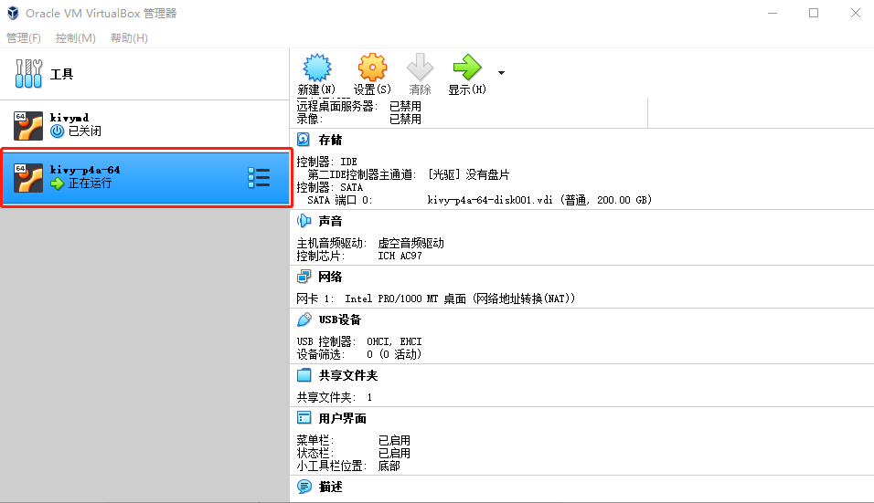
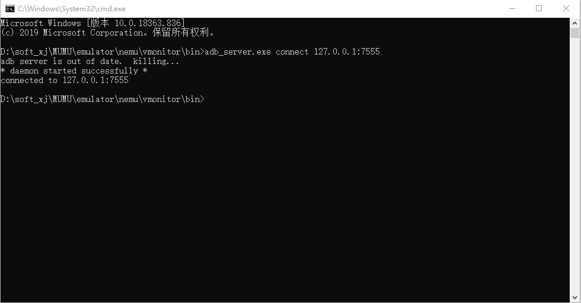
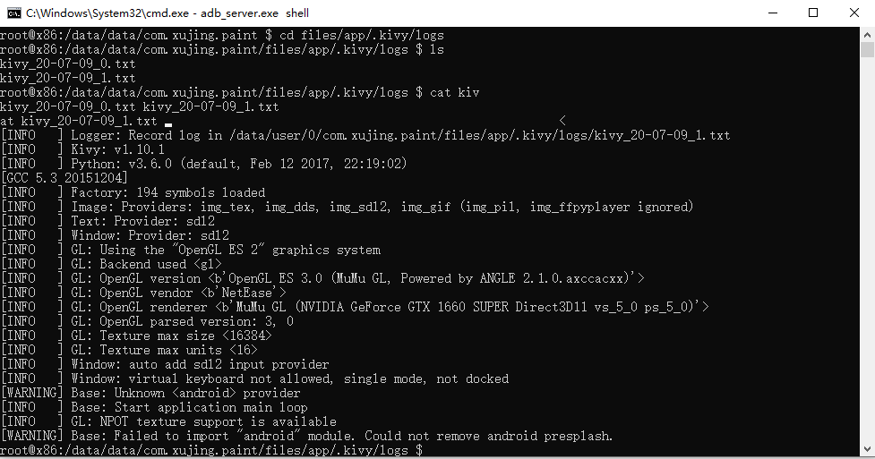

第八章 p4a Android打包基于kivy的涂鸦画板项目
python-for-android简称p4a是kivy应用打包成apk的一种方法，使用p4a需要手动下载Android SDK和Android NDK的安装包，随后安装构建工具，配置SDK和NDK的环境变量，值得注意的是该方法只能在Linux平台上打包，关于安装和p4a的介绍，可以参考https://python-for-android.readthedocs.io/en/latest/,如果需要本课程将提供一个已经完全设置好饿虚拟机，该虚拟机来源于《Python+kivy(App开发)从入门到实践》

1.基于Kivy开发的涂鸦画板项目的p4a安卓打包及项目演示
首先通过如下命令清除其他apk中的builds和dists文件夹，对于同一个apk,该命令只执行一次即可。
p4a clean_builds && p4a clean_dists
kivydev@kivydev-VirtualBox:~/test/paint$ p4a clean_builds && p4a clean_dists
[INFO]: Reading .p4a configuration
[INFO]: Recipe python3crystax: version "3.6" requested
[INFO]: Reading .p4a configuration
[INFO]: Recipe python3crystax: version "3.6" requested
自动生成的.p4a文件，如下：
--dist_name Paint
--android_api 19
--minsdk 19
--sdk_dir /home/kivydev/andr/android-sdk-linux
--ndk_dir /home/kivydev/andr/crystax-ndk-10.3.2
--arch armeabi-v7a
--requirements python3crystax==3.6,kivy
--private .
--package com.xujing.paint
--name paint
--version 1.0
--orientation landscape
--bootstrap sdl2
--icon icon.png
随后通过以下命令打包apk
p4a apk --debug
[INFO]: Reading .p4a configuration
[INFO]: Recipe python3crystax: version "3.6" requested
[INFO]: Will compile for the following archs: armeabi-v7a
[INFO]: Getting Android API version from user argument
[INFO]: Available Android APIs are (19, 23, 27)
[INFO]: Requested API target 19 is available, continuing.
[INFO]: Getting NDK dir from from user argument
[INFO]: Got NDK version from $ANDROIDNDKVER
[INFO]: Got Android NDK version from the NDK dir: it is 10.3.2
[INFO]: Using Crystax NDK 10.3.2
[INFO]: Found virtualenv at /usr/bin/virtualenv
[INFO]: Found the following toolchain versions: ['4.9', '5', 'clang3.6', 'clang3.7']
[INFO]: Picking the latest gcc toolchain, here 5
[INFO]: Of the existing distributions, the following meet the given requirements:
[INFO]: Paint: includes recipes (hostpython3crystax, sdl2_image, sdl2_mixer, sdl2_ttf, python3crystax, sdl2, six, pyjnius, kivy), built for archs (armeabi-v7a)
[INFO]: Paint has compatible recipes, using this one
[INFO]: Of the existing distributions, the following meet the given requirements:
[INFO]: Paint: includes recipes (hostpython3crystax, sdl2_image, sdl2_mixer, sdl2_ttf, python3crystax, sdl2, six, pyjnius, kivy), built for archs (armeabi-v7a)
[INFO]: Paint has compatible recipes, using this one
Could not find hostpython, will not compile to .pyo (this is normal with python3)
[INFO]: -> directory context /home/kivydev/.local/share/python-for-android/dists/Paint
No compiled python is present to zip, skipping.
this should only be the case if you are using the CrystaX python
[INFO]: Selecting java build tool:
[INFO]: Detected highest available build tools version to be 28.0.3
[INFO]: Building with gradle, as gradle executable is present
[DEBUG]: -> running gradlew assembleDebug
[DEBUG]: > Configuring > 0/1 projects > root project > Resolving dependenIncremental java compilation is an incubating feature.
[DEBUG]: :preBuild UP-TO-DATE
[DEBUG]: :preDebugBuild UP-TO-DATE
[DEBUG]: :checkDebugManifest
[DEBUG]: :prepareDebugDependencies
[DEBUG]: :compileDebugAidl UP-TO-DATE
[DEBUG]: :compileDebugRenderscript UP-TO-DATE
[DEBUG]: :generateDebugBuildConfig UP-TO-DATE
[DEBUG]: :generateDebugResValues UP-TO-DATE
[DEBUG]: :generateDebugResources UP-TO-DATE
[DEBUG]: :mergeDebugResources
[DEBUG]: :processDebugManifest UP-TO-DATE
[DEBUG]: :processDebugResources
[DEBUG]: :generateDebugSources
[DEBUG]: :incrementalDebugJavaCompilationSafeguard UP-TO-DATE
[DEBUG]: :javaPreCompileDebug
[DEBUG]: :compileDebugJavaWithJavac UP-TO-DATE
[DEBUG]: :compileDebugNdk UP-TO-DATE
[DEBUG]: :compileDebugSources UP-TO-DATE
[DEBUG]: :mergeDebugShaders UP-TO-DATE
[DEBUG]: :compileDebugShaders UP-TO-DATE
[DEBUG]: :generateDebugAssets UP-TO-DATE
[DEBUG]: :mergeDebugAssets
[DEBUG]: :transformClassesWithDexForDebug UP-TO-DATE
[DEBUG]: :mergeDebugJniLibFolders UP-TO-DATE
[DEBUG]: :transformNativeLibsWithMergeJniLibsForDebug UP-TO-DATE
[DEBUG]: :transformNativeLibsWithStripDebugSymbolForDebug UP-TO-DATE
[DEBUG]: :processDebugJavaRes UP-TO-DATE
[DEBUG]: :transformResourcesWithMergeJavaResForDebug UP-TO-DATE
[DEBUG]: :validateSigningDebug
[DEBUG]: :packageDebug
[DEBUG]: :assembleDebug
[DEBUG]:
[DEBUG]: BUILD SUCCESSFUL
[DEBUG]:
[DEBUG]: Total time: 6.116 secs
[DEBUG]:
[INFO]: <- directory context /home/kivydev/test/paint
[INFO]: # Copying APK to current directory
[INFO]: # APK filename not found in build output, trying to guess
[INFO]: # Found APK file: /home/kivydev/.local/share/python-for-android/dists/Paint/build/outputs/apk/Paint-debug.apk
[INFO]: # Add version number to APK
[INFO]: # APK renamed to Paint-1.0-debug.apk
[DEBUG]: -> running cp /home/kivydev/.local/share/python-for-android/dists/Paint/build/outputs/apk/Paint-debug.apk Paint-1.0-debug.apk
打包完成后会生成apk文件，把apk文件复制到共享文件夹，并在手机或安卓模拟器中安装。

2.MUMU安卓模拟器及adb_server.exe调试
我们将打包好的apk文件安装在安卓模拟器，并通过安卓模拟器提供的adb_server.exe多apk进行调试
首先我们将刚刚打包好的apk文件安装到安卓模拟器：

打开我们安装的安卓程序

可以正常工作。
我们通过MUMU安卓模拟器自带的adb_server.exe调试看一下后台运行的日志
cmd
cd D:\soft_xj\MUMU\emulator\nemu\vmonitor\bin
adb_server.exe connect 127.0.0.1:7555

adb_server.exe shell
run-as com.xujing.paint
cd files/app/.kivy/logs
cat kivy_20-07-09_1.txt

没有ERROR同时我们的安卓程序并没有闪退，运行正常，如果过程中我们的程序出现闪退或错误，请按照上述方式进行调试，寻找原因。
3.adb安卓调试
最后我们将p4a打包的安卓程序安装运行在我们的华为安卓手机上，首先我们经apk安装在我们的华为手机上

我们使用adb调试我们安卓手机上的apk应用
adb shell
run-as com.xujing.paint
cd files/app/.kivy/logs
cat kivy_20-07-09_1.txt

4.关于基于p4a打包基于kivymd的涂鸦画板
.p4a
--dist_name PaintMD
--android_api 19
--minsdk 19
--sdk_dir /home/kivydev/andr/android-sdk-linux
--ndk_dir /home/kivydev/andr/crystax-ndk-10.3.2
--arch armeabi-v7a
--requirements python3crystax==3.6,kivy,kivymd
--private .
--package com.xujing.paintmd
--name paintmd
--version 1.0
--orientation landscape
--bootstrap sdl2
--icon icon.png
打包和调试的方式与上文方式相同。